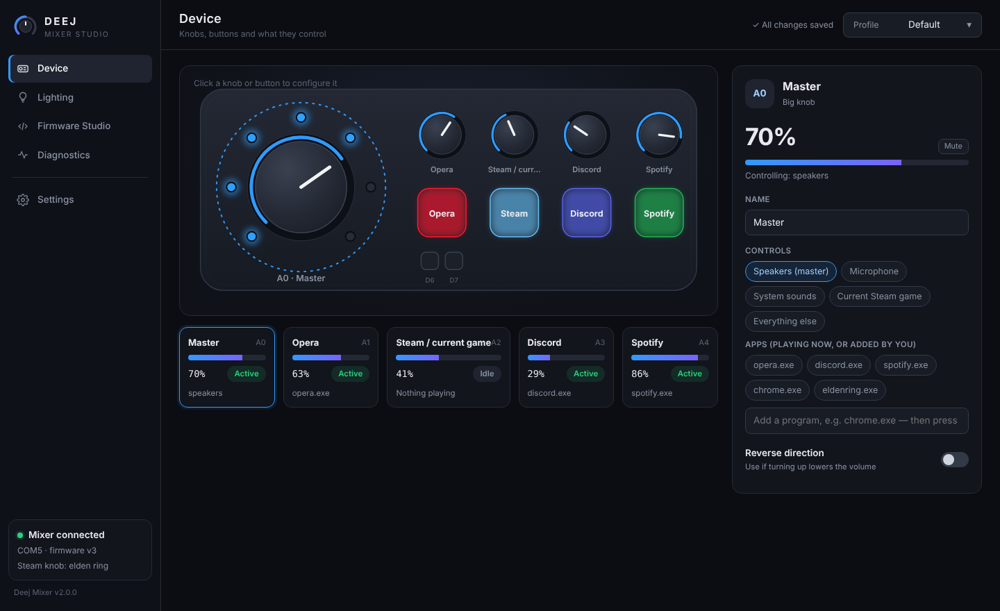
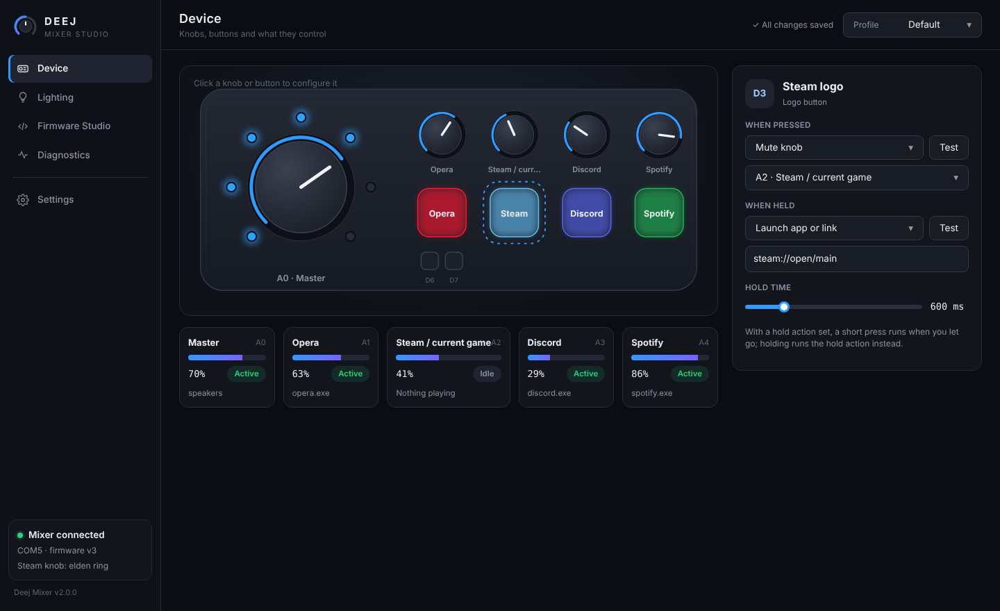
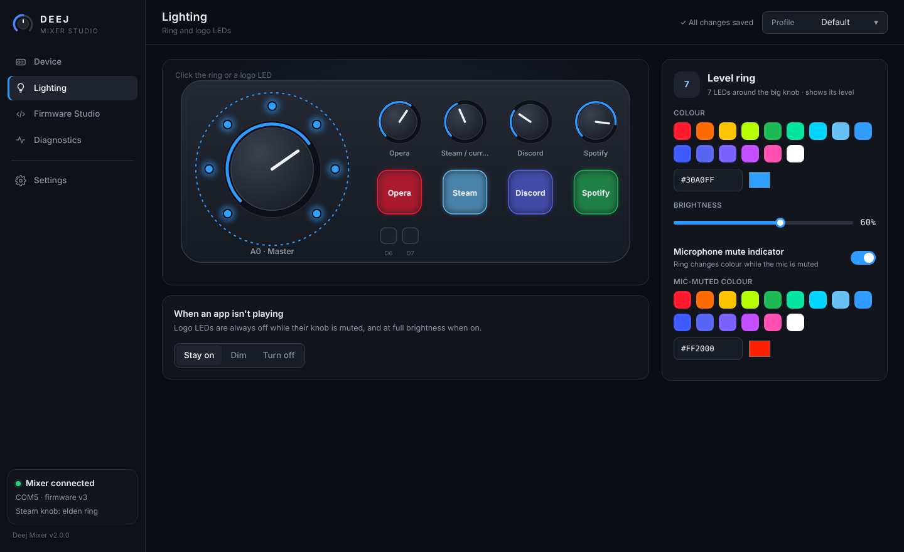
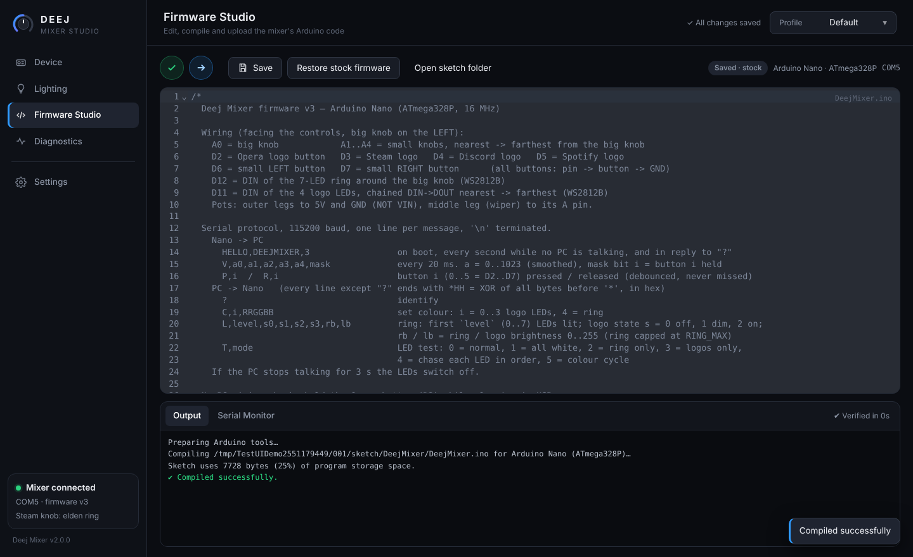

Five knobs, six programmable buttons and LED lighting for per-app volume on Windows, with a configuration app that feels like the software for the gear you already own.

Click any knob or button on the live picture of your mixer to configure it. Changes save automatically to the active profile.
Bind each knob to your speakers, microphone, system sounds, any app or group of apps, or everything else.
Automatically follows the game you launched last from your Steam library, falling back to the Steam client.
Each button gets two actions: mute a knob, mute the mic, launch an app or link, send a keyboard shortcut, or control media.
The ring shows the big knob's level, logo LEDs go dark when their app is muted, and the ring changes colour while your mic is muted.
Keep Gaming, Work and Streaming setups, and switch between them from the title bar.
A live hardware test for every button, knob and LED that catches shorted switches, loose wipers and LED order.
A short press mutes; holding opens the app. Or map a button to any shortcut, link or program.
steam://open/mainCTRL+SHIFT+M

Pick a colour for the ring and each logo, or pick which knob each logo follows. Logo LEDs always run at full brightness, and the ring brightness stays within USB power limits.
An Arduino-IDE-style editor built into the app. Change the mixer's code and upload it without leaving the app.
Ctrl+R / Ctrl+U / Ctrl+S
Designed around the deej enclosure on Printables. Facing the mixer, the big knob is on the left.
| Nano pin | Connects to |
|---|---|
| A0 | Big knob wiper |
| A1 → A4 | Small knob wipers, from nearest to farthest |
| D2 – D5 | Logo buttons: Opera, Steam, Discord, Spotify |
| D6 / D7 | Small left / right buttons |
| D12 | 7-LED ring DIN (WS2812B) |
| D11 | 4 logo LEDs, chained DIN → DOUT |
| 5V / GND | Pots, LED power and button ground |
| Part | Qty |
|---|---|
| Arduino Nano (ATmega328P) | 1 |
| 10 kΩ linear potentiometer | 5 |
| Tactile push button | 6 |
| WS2812B LED | 11 |
| 330–470 Ω resistor (LED data) | 2 |
| 100–470 µF capacitor (LED power) | 1 |
One installer sets up the app, a Start-menu entry and the CH340 USB driver in Windows' own driver store.
Download DeejMixer-Setup.exe from Releases. Silent install: /S.
Windows loads the driver automatically, and the app finds the mixer and turns green.
Click a knob or button to configure it, or open Diagnostics to test every part.